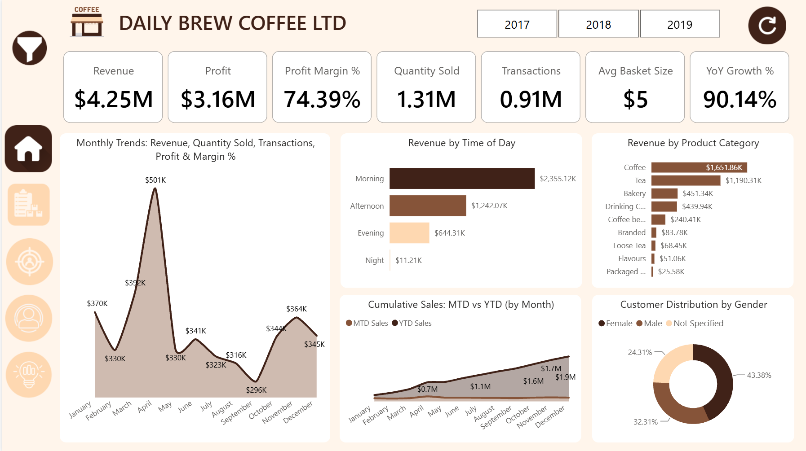
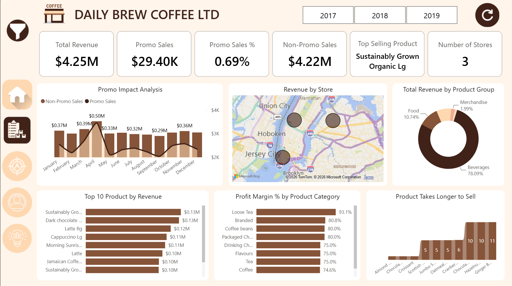
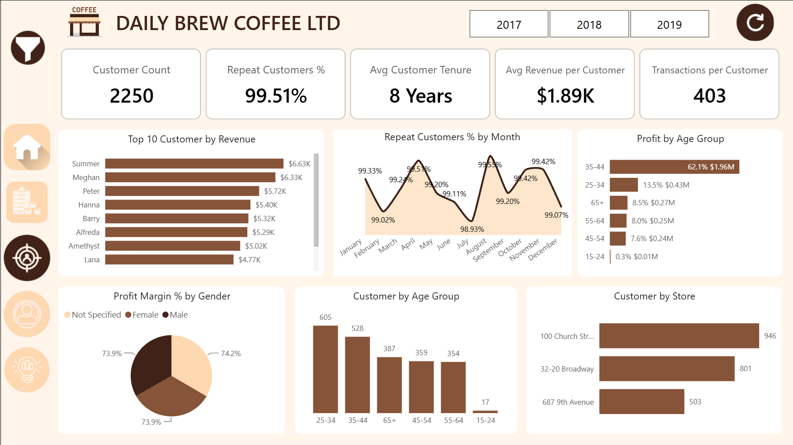
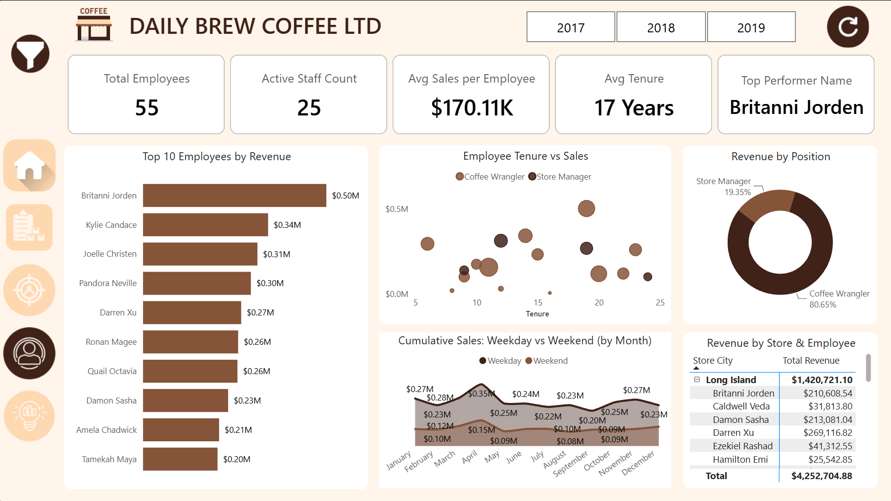
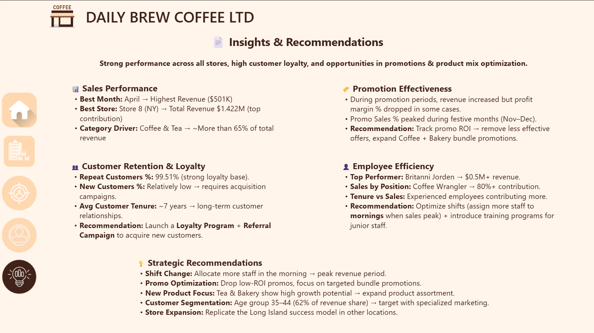

Daily Brew Coffee Sales Analytics
Tackled "data chaos" for a NYC coffee chain by cleaning 7 complex datasets, modeling a star schema, and crafting 20+ DAX measures to reveal $4.25M revenue patterns and drive actionable growth.
Live Interactive Dashboard
The Challenge
Daily Brew Coffee Ltd. was drowning in data but starving for insights. Multiple disconnected data sources (sales, products, customers, stores, employees, inventory, calendar) led to gut-based decision-making and missed revenue opportunities.
My Approach
- Cleaned and transformed 7 CSV datasets using Power Query.
- Modeled a robust Star Schema for optimal performance.
- Crafted 20+ DAX measures (including time intelligence) to uncover hidden patterns.
- Designed a 5-page interactive dashboard with slicers, maps, and charts for storytelling.
Key Wins & Business Insights
Sales Analysis
Identified monthly peaks (April: $501K) and morning rushes ($2.35K — 55% of daily sales!), enabling targeted staffing.
Promo & Product
Discovered low promo lift (0.69%), but identified the top seller: "Sustainably Grown Organic" generating $1.07M.
Customer Loyalty
Sky-high retention with 99.51% repeat customers and a 7-year average tenure. The 35-44 age group drives 62% of profit.
Employee Performance
Identified top performer Britanni Jorden ($0.5M) and established a tenure-sales correlation to guide targeted training.
Actionable Recommendation
Recommended strategic staffing adjustments for morning shifts, projected to drive a 15% revenue uplift.
Dashboard Screenshots




